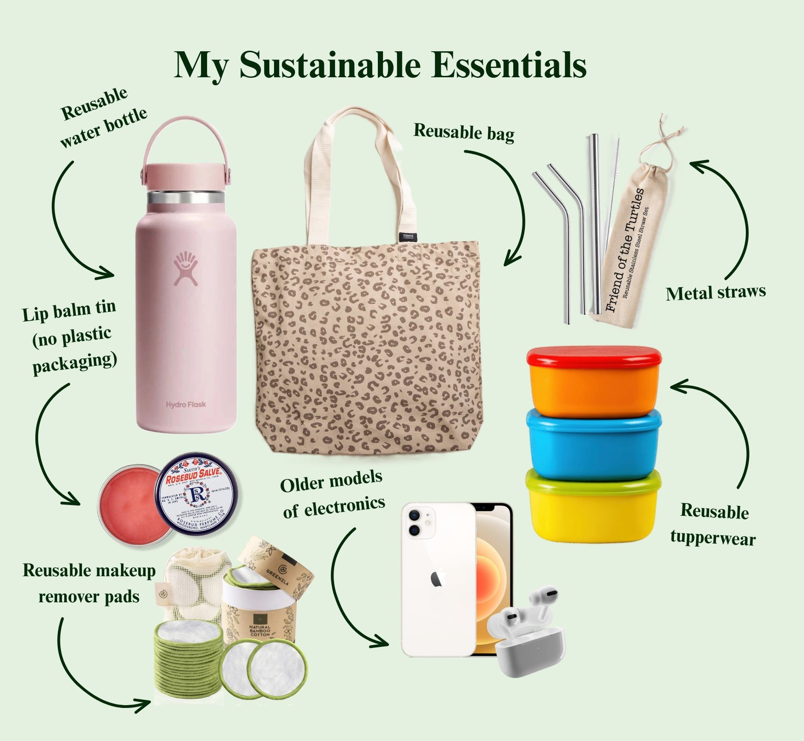

Meet the Author!
My name is Aimee, I'm the author of this website. I have a passion for individual and community sustainability practices.
I created this site to share my knowledge and journey towards a more eco-friendly lifestyle.
I believe that as a collective, we can make change and inspire others.
I am currently a student at Arizona State University studying conservation biology. I have always been passionate
about the environment and sharing my knowledge with others!
Continue reading to learn about my personal practices and views. Visit the "Lifestyle" tab to get
tips on how to be more eco-friendly in your daily life. Visit the "Actions & Facts" tab to learn about how you can make a large impact.
The Power of the Consumer
As consumers, we have the power to influence the need for sustainable practices in the marketplace. As consumers, we can make a difference by choosing to support companies that prioritize sustainability and ethical practices. Some ways I do this include:
- Choosing to buy products with minimal packaging.
- Opting out of single-use plastic bags at the store by carrying a reusable bag with me.
- Avoiding unnecessary purchases that generate excessive waste.
- Buying long-lasting products that reduce the need for frequent replacements.
- Buying second-hand items when possible.
The Power of Recycling
Recycling can make a positive impact on the environment. Look up your city's recycling guidelines to learn about what can be thrown in the recycling bin. Before you recycle any aluminum, plastic, or glass, make sure to rinse it out to remove any food residue. This helps to prevent contamination in the recycling process and ensures that the materials can be properly recycled.
Recycling is not just throwing your plastics in the blue bin. It includes reducing and reusing materials to minimize waste.
One way I reuse items is by saving glass jars for storage and using them multiple times before recycling them. There are many different ways to reuse items, get creative!

My Journey to Sustainability
There are so many ways to live sustainably, I hope to spread this information to inspire others to reflect and incorporate these changes into their everyday lives. When I started this journey, I wish there was someone that told me that sustainability can be easy! Sustainabiltiy is not always common-sense but it's easy to learn these practices.
My journey to sustainability has been a learning experience more than anything. Although I strive for sustainability, I have not achieved a perfectly sustainable lifestyle. Living in America, as a college student on a budget, it is extremely difficult to be perfectly sustainable. However, I have made many changes to my lifestyle that have made a difference. I make my changes hoping it makes a difference and I hope it inspires other to make changes as well.

Some of the biggest and most impactful changes I've made include:
- Using a reusable water bottle
- Not using plastic bags while shopping
- Buying all my furniture second-hand
- Using reusable containers for food storage
- Eating less meat
- Using less energy and water
- Using something until it is unusable
- Getting most of my clothing from second-hand stores and websites